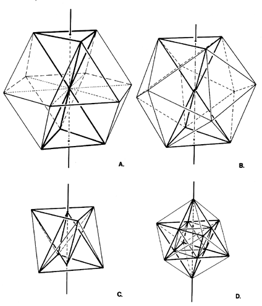

|  |
| Fig. 1033.43 Two Opposite-Paired Tetrahedra Interpenetrate in Jitterbug Contraction: As one axis remains motionless, two polar-paired, vertex-joined tetrahedra progressively interpenetrate one another to describe in mid-passage an octahedron, at C, and a cube-defining star polyhedron of symmetrical congruence at D. (Compare Fig. 987.242A.) |